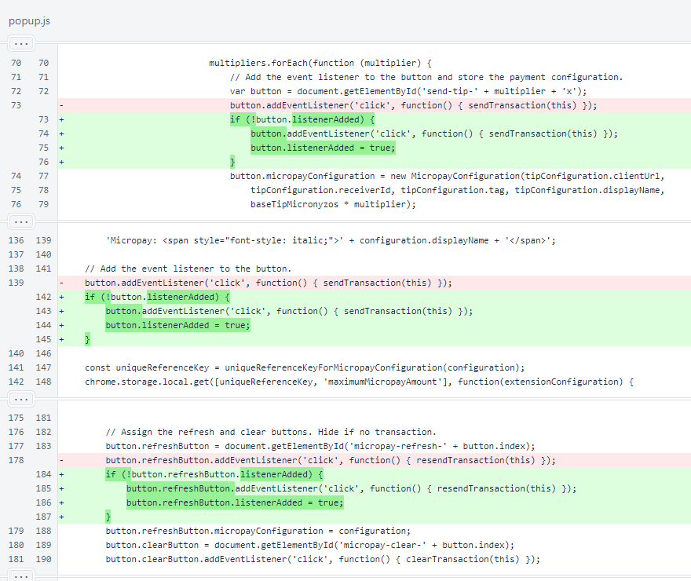

Nyzo Chrome extension version 8 (commit on GitHub) adds support for binary (non-text) sender data.
While plain-text sender data is convenient for readability, the increased data density of binary sender data can be useful, especially for hashes. This version of the extension adds support for normalized sender-data strings to allow use of binary/hex/non-text sender data. Importantly, this version does not change the data type presented to the Javascript interface — plain text is still used — so it is fully backward-compatible with pages written for earlier versions. In both directions, normalized sender-data strings pass binary data between page Javascript and the extension.
In the content script, a function call was changed from
string
In the extensionUtil script, the
maximum
The clean
In the popup script, protections were added to ensure event listeners for some events were not added multiple times.

In the send
The interesting changes of this version are in the util script. The
string
If the input string is a valid normalized sender-data string, the bytes of that string are extracted. Otherwise, the string is interpreted as plain text.